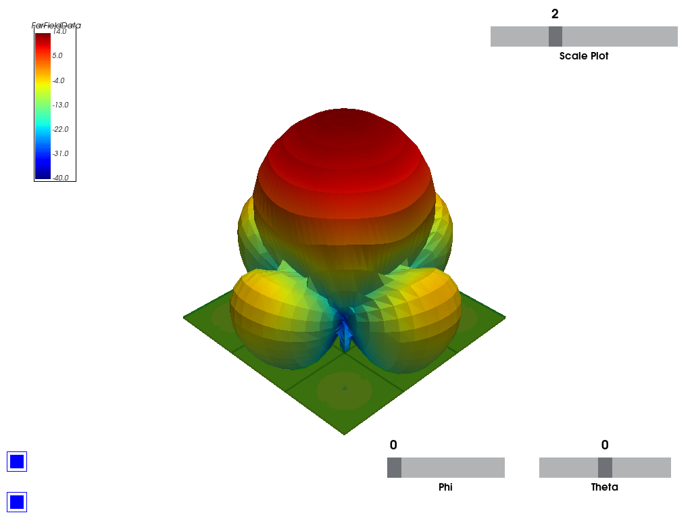
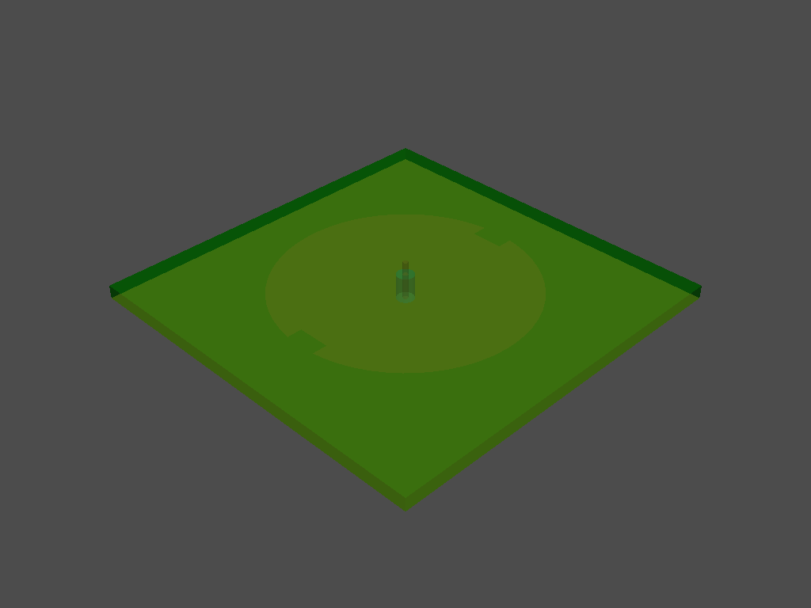

Note
Click here to download the full example code
HFSS: component antenna array#
This example shows how you can use PyAEDT to create an example using a 3D component file. It sets up the analysis, solves it, and uses postprocessing functions to create plots using Matplotlib and PyVista without opening the HFSS user interface. This examples runs only on Windows using CPython.
Perform required imports#
Perform required imports.
import os
import pyaedt
Set non-graphical mode#
Set non-graphical mode. "PYAEDT_NON_GRAPHICAL" is needed to generate
documentation only.
You can set non_graphical either to True or False.
non_graphical = False
Download 3D component#
Download the 3D component that is needed to run the example.
example_path = pyaedt.downloads.download_3dcomponent()
Launch HFSS and save project#
Launch HFSS and save the project.
project_name = pyaedt.generate_unique_project_name(project_name="array")
hfss = pyaedt.Hfss(projectname=project_name,
specified_version="2023.1",
designname="Array_Simple",
non_graphical=non_graphical,
new_desktop_session=True)
print("Project name " + project_name)
Project name D:\Temp\pyaedt_prj_3AF\array.aedt
Read array definition from JSON file#
Read the array definition from a JSON file. A JSON file can contain all information needed to import and set up a full array in HFSS.
If a 3D component is not available in the design, it is loaded into the dictionary from the path that you specify. The following code edits the dictionary to point to the location of the A3DCOMP file.
dict_in = pyaedt.data_handler.json_to_dict(os.path.join(example_path, "array_simple.json"))
dict_in["Circ_Patch_5GHz1"] = os.path.join(example_path, "Circ_Patch_5GHz.a3dcomp")
dict_in["cells"][(3, 3)] = {"name": "Circ_Patch_5GHz1"}
hfss.add_3d_component_array_from_json(dict_in)
True
Set up simulation#
Set up a simulation and analyze it.
setup = hfss.create_setup()
setup.props["Frequency"] = "5GHz"
setup.props["MaximumPasses"] = 3
hfss.analyze(num_cores=4)
True
Get far field data#
Get far field data. After the simulation completes, the far field data is generated port by port and stored in a data class.
ffdata = hfss.get_antenna_ffd_solution_data(sphere_name="Infinite Sphere1", setup_name=hfss.nominal_adaptive,
frequencies=[5e9])
Generate contour plot#
Generate a contour plot. You can define the Theta scan and Phi scan.
ffdata.plot_farfield_contour(qty_str='RealizedGain', convert_to_db=True,
title='Contour at {}Hz'.format(ffdata.frequency))
<module 'matplotlib.pyplot' from 'c:\\actions-runner\\_work\\pyaedt\\pyaedt\\testenv\\lib\\site-packages\\matplotlib\\pyplot.py'>
Generate 2D cutout plots#
Generate 2D cutout plots. You can define the Theta scan and Phi scan.
ffdata.plot_2d_cut(primary_sweep='theta', secondary_sweep_value=[-180, -75, 75],
qty_str='RealizedGain',
title='Azimuth at {}Hz'.format(ffdata.frequency),
convert_to_db=True)
ffdata.plot_2d_cut(primary_sweep="phi", secondary_sweep_value=30,
qty_str='RealizedGain',
title='Elevation',
convert_to_db=True)


<Figure size 2000x1000 with 1 Axes>
Generate 3D polar plots in Matplotlib#
Generate 3D polar plots in Matplotlib. You can define the Theta scan and Phi scan.
ffdata.polar_plot_3d(qty_str='RealizedGain',
convert_to_db=True)
Generate 3D plots in PyVista#
Generate 3D plots in PyVista. You can define the Theta and Phi scan angles. You can change the easy-to-use interactive plot that is generated on the fly.
ffdata.polar_plot_3d_pyvista(qty_str='RealizedGain',
convert_to_db=True,
export_image_path=os.path.join(hfss.working_directory, "picture.jpg"),
show=False)
- 
- 
c:\actions-runner\_work\pyaedt\pyaedt\testenv\lib\site-packages\pyvista\core\dataset.py:2132: PyVistaDeprecationWarning: Use of `DataSet.overwrite` is deprecated. Use `DataSet.copy_from` instead.
warnings.warn(
True
Release AEDT#
Release AEDT.
hfss.release_desktop()
True
Total running time of the script: ( 1 minutes 53.657 seconds)